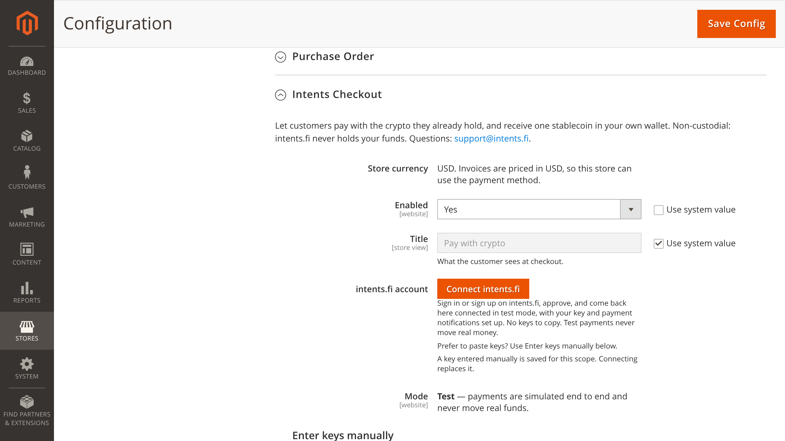
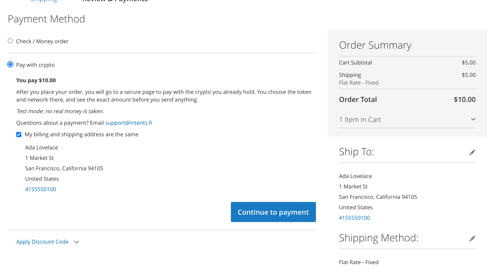
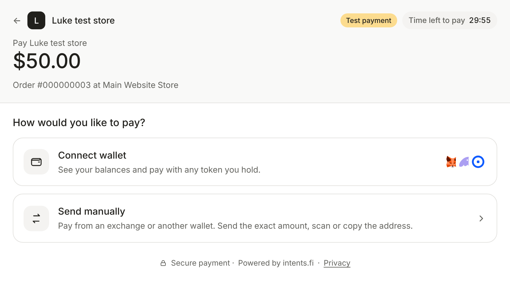
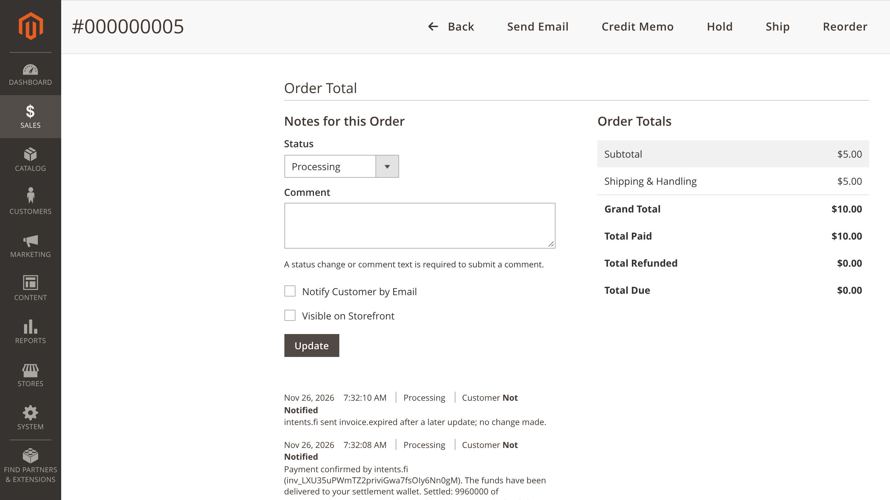

User and installation guide · version 1.0.1 · tested on Magento Open Source 2.4.7 and 2.4.8 (PHP 8.2 and 8.3) and 2.4.9 (PHP 8.3, 8.4 and 8.5)
Intents Checkout adds a Pay with crypto payment method to the Magento checkout. Your customer sees the order total first, then pays on the secure Intents payment page with the crypto they already hold. You receive one stablecoin (USDC or USDT on the network you choose) directly in your own wallet. Intents never holds your funds. The fee is 0.4% of each completed payment, for every merchant; test mode is free.
curl and json extensions (both standard for Magento).composer require intentsfi/module-checkout bin/magento module:enable IntentsFi_Checkout bin/magento setup:upgrade bin/magento setup:di:compile # production mode bin/magento setup:static-content:deploy # production mode bin/magento cache:flush
mkdir -p app/code/IntentsFi/Checkout unzip intentsfi-magento2-1.0.1.zip -d app/code/IntentsFi/Checkout bin/magento module:enable IntentsFi_Checkout bin/magento setup:upgrade
Then compile, deploy static content and flush the cache as above. setup:upgrade creates one table, intentsfi_checkout_webhook_event, which remembers the payment notifications already applied.
Open Stores → Configuration → Sales → Payment Methods → Intents Checkout. Choose the scope first if you run several websites: each website can have its own connection.

Once connected, the same row shows the business and store you are connected as, whether payment notifications work, and the Go live and Disconnect buttons.
If something goes wrong, a message at the top of the page says what and what to do: for example, the request expired (it waits 30 minutes), or it was cancelled on the dashboard. Nothing is saved unless the whole round trip succeeds.
ik_test_…) and paste it into API key. A publishable pk_… key is refused.invoice.* events, and paste the whsec_… secret it shows into Webhook secret.Add a product to the cart and go to checkout. Pay with crypto shows the amount first; Continue to payment places the order at Pending Payment and sends the customer to the payment page.


On a test invoice the page offers Complete the test payment. No real money moves. When the payment completes, the order is invoiced, moves to Processing, and the order email is sent.

On your Intents dashboard, verify your email and add your payout wallet. Then press Go live in the module's settings and approve on the dashboard. The live key and a live payment notification address replace the test ones, and the test connection is revoked. If the checklist is not done yet, the page says so and the store stays in test mode. Place a real $5 order to check it reaches Processing and the funds reach your wallet.
With keys entered manually: register the webhook URL with the live key, paste the live key and its whsec_… secret, and save. Mode reads Live.
| Payment event | Order |
|---|---|
| Payment sent, being confirmed | a comment only: do not ship yet |
| Paid (funds delivered) | invoiced, Processing, order email sent |
| Paid, but not the order's amount or currency | On Hold with a comment; never invoiced |
| Underpaid | On Hold with what is still owed; released if the rest arrives |
| Expired or cancelled | Canceled, if nothing was paid |
| Paid after the order was cancelled | a comment and an admin notification; never invoiced automatically |
| Needs review | a comment and an admin notification |
Notifications are signed and verified; duplicates and out-of-order deliveries change nothing twice. A customer returning to the store never marks an order paid. Cancelling an order in Magento also closes its payment.
Press Disconnect. The keys and payment notifications Connect made are revoked by Intents at once, and cleared from Magento. You can also disconnect from Integrations on the dashboard.
| Setting | Notes |
|---|---|
| Enabled, Title | offer the method; what the customer sees (default Pay with crypto) |
| Intents account | Connect to Intents; once connected: the business, the store, payment notifications, Go live, Disconnect |
| Mode | read-only: Test or Live, from the saved key |
| API key, Webhook secret | filled by Connect, or entered manually; stored encrypted, never exported by app:config:dump, never logged |
| Webhook URL | read-only: https://<store>/intentsfi/webhook |
| Test connection | checks the saved key; save first |
| Applicable countries, Sort order | standard Magento payment settings |
https:// address; press Connect to Intents again once it does. Deliveries are logged in var/log/intentsfi_checkout.log, which never contains keys or secrets.Disconnect first if the store is connected, so its keys are revoked. For a Composer install run bin/magento module:uninstall IntentsFi_Checkout --remove-data: it removes the module, its table and its settings (orders keep their payment details). For a zip install in app/code, run bin/magento module:disable IntentsFi_Checkout, delete app/code/IntentsFi/Checkout and run bin/magento setup:upgrade.
Email support@intents.fi (support is by email only). Documentation: https://intents.fi/docs/checkout/magento. Terms: https://intents.fi/terms. Privacy: https://intents.fi/privacy.